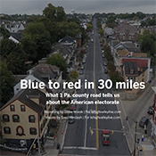

Long-form articles are a no-go zone for many. Yet, there are a few stories that keep us engrossed, thanks to multimedia storytelling. As I approach the avenue of journalism to understand the American way of life in the streets and city corners, this multimedia piece done by LehighValleyLive.com in 2020 widens my pathways beyond the scope of daily news.
The story is presented with a compelling mix of visual storytelling and old-school, objective-style journalism.
Reporter Steve Novak carries you around Route 248 in the Northampzton County of Pennsylvania, telling the story of a diverse population mix and their political choices. From blue to red, he explores the choices of the individual voters based on their lifestyles, socio-political awareness, financial dilemmas, and racial crises.
Saed Hindash accompanies Novak, bringing visuals from the busy road and neighborhood. The visuals displayed as a GIF header would set your thoughts into motion. His video interviews of the locals are a story by themselves. He would further captivate you with still images, and time-lapse videos of people and places.